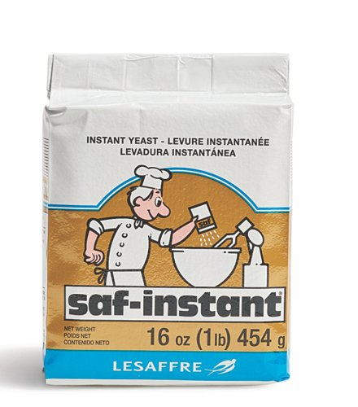

Good ingredients show up in the bread. Here’s what Bunny buys, where it matters most, and where it doesn’t.
Many bakers don’t realize there are two kinds of instant yeast. Sugar pulls water away from yeast, so in a sweet dough, regular yeast works slowly and the dough struggles to rise. Sweet-dough yeast is made to handle it.

Use this for sweet, enriched doughs like milk bread and red bean buns. All the recipes on this site assume this kind.
Works well when there’s little or no sugar, like plain loaves and bagels. In sweet dough, it slows down. Once the sugar reaches about 10% of the flour weight, switch to sweet-dough yeast.
Only have regular yeast? For a sweet dough, use 1.3 to 1.5 times the amount the recipe calls for.
The main difference between bread flour and all-purpose flour is protein. When flour meets liquid and gets kneaded, its proteins form gluten, a stretchy network that traps the gas from the yeast. More protein means a stronger network, and that network is what holds a soft bread up.
Builds strong gluten, so the dough rises tall, holds its shape, and pulls apart in soft, stretchy strands. All the recipes on this site use bread flour.
Makes weaker gluten. The bread comes out shorter and more cake-like, with less of that stretchy pull, and it’s more likely to sink or spread.
Gluten is also why the windowpane test matters. When a thin piece of dough stretches until you can see light through it, the gluten network is fully developed and ready to hold the rise.
Bunny uses organic ingredients across the board. These three make the biggest difference in soft, enriched breads like milk bread.
Milk is most of the liquid in these doughs, so its flavor carries right into the crumb. Whole milk makes a more flavorful bread than low-fat milk, but choose what fits your diet.
Orange yolks give the crumb a warm, golden color, so the bread looks as good as it tastes.
A rich, European-style butter gives bread a fuller, more fragrant flavor. Salted or unsalted both work: butter doesn’t contain much salt, so it barely changes the dough. Bunny buys Kerrygold salted.
Sugar and salt. Bunny hasn’t found a meaningful difference between brands here, so use whatever you have.
Milk powder. It’s optional in these recipes and used in small amounts, so any brand works.
Sesame seeds. They’re only for decoration.